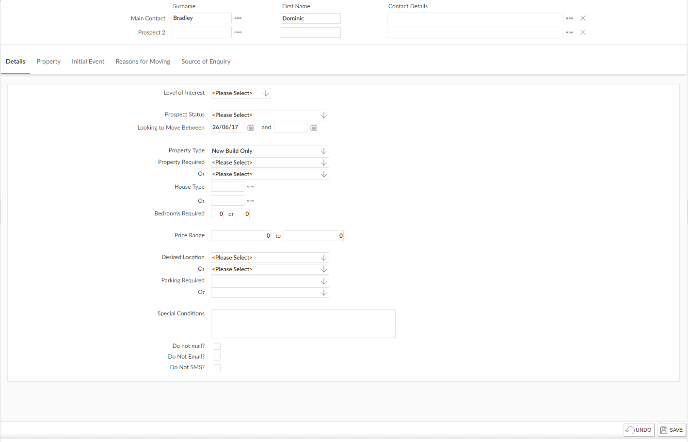

To add a new
- Go to the
- On the Add New
For example, are you adding the
- Fill in at least one field (
- Click
 .
.
- If there are people in the database that may be the same as the person you want to add,
- If there are no matching names,

- If there are people in the database that may be the same as the person you want to add,
- Click
 to add the Main Contact as a new person. If this is a joint
to add the Main Contact as a new person. If this is a joint - Fill in any additional details about the
- Use the Details tab to enter the
- Use the Property tab to enter details of the
- Use the Initial Event tab to enter more information about this first contact with the
- Use the Reasons for Moving tab to indicate why the
- Use the Source of
- Click
 to save your changes.
to save your changes.
If you are adding details of a joint